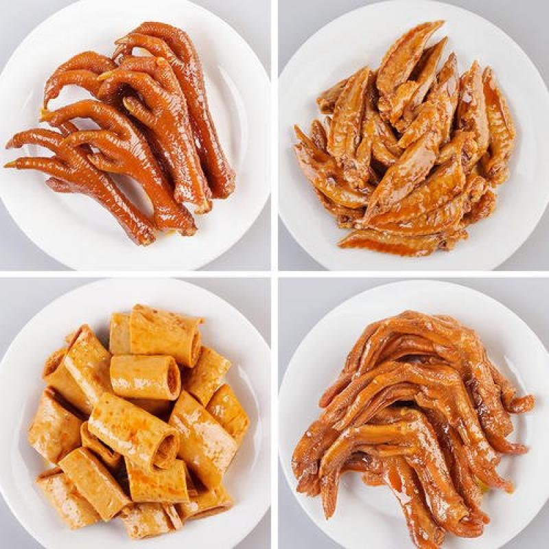
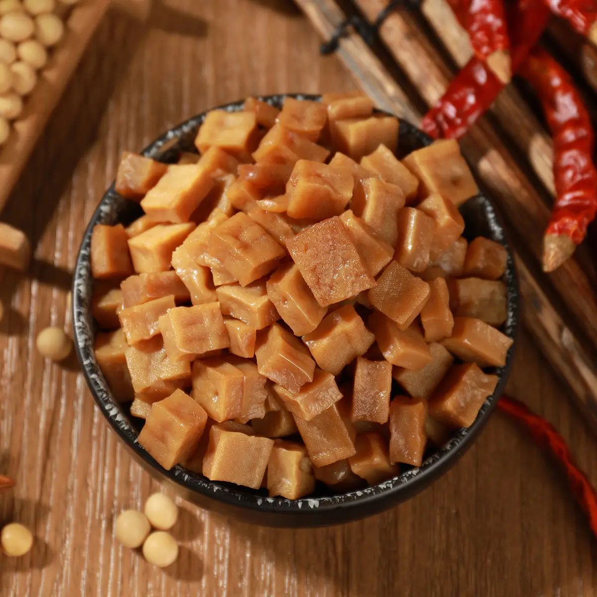
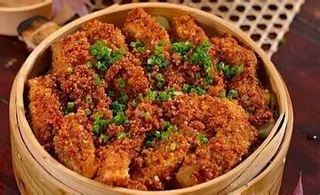

城市美食
城市美食
- 灯影牛肉
- 羊肉格格
- 七星椒
- 开江豆笋
- 大竹豆干
- 石梯蒸鱼
灯影牛肉
灯影牛肉是四川达州市的地方传统名吃,流传至今已有100多年历史,该美食已经被列入了四川省非物质文化遗产。
羊肉格格
羊肉格格是四川达州非常有名的一道菜,据说这道美食兴于乾隆年间,流传到现在都有2000多年历史了,该美食的制作工艺已经被列入了第五批达州市非物质文化遗产。
七星椒
七星椒是国内最辣的辣椒之一，其辣度可达七星级，故名七星椒,用七星椒卤制的菜品，是达州的特色食品，而且始终保持纯手工工艺，其口味独特，麻辣适度，回味无穷。
开江豆笋
开江豆笋采用优质大豆为原料，经过特殊加工、烘烤制作、真空包装而成的绿色食品，是开江县著名的地方特产，其营养丰富、香嫩绵软，口感独特，深受广大消费者的喜爱。
大竹豆干
大竹观音豆干是四川省达州市大竹县观音镇的一道特产，目前已经被列入达州市非物质文化遗产，也是达州的老字号美食了，该制作工艺流传至今已有百年历史了。
石梯蒸鱼
石梯蒸鱼是四川达州市达县石梯镇的地方特色名菜，用的就是当地巴河边生产的鲶鱼或鲢鱼为主要食材，把它剁成鱼块，拌上绿豆面、豌豆面、芝麻面、辣椒粉等佐料，放在蒸屉上蒸熟即可食用。